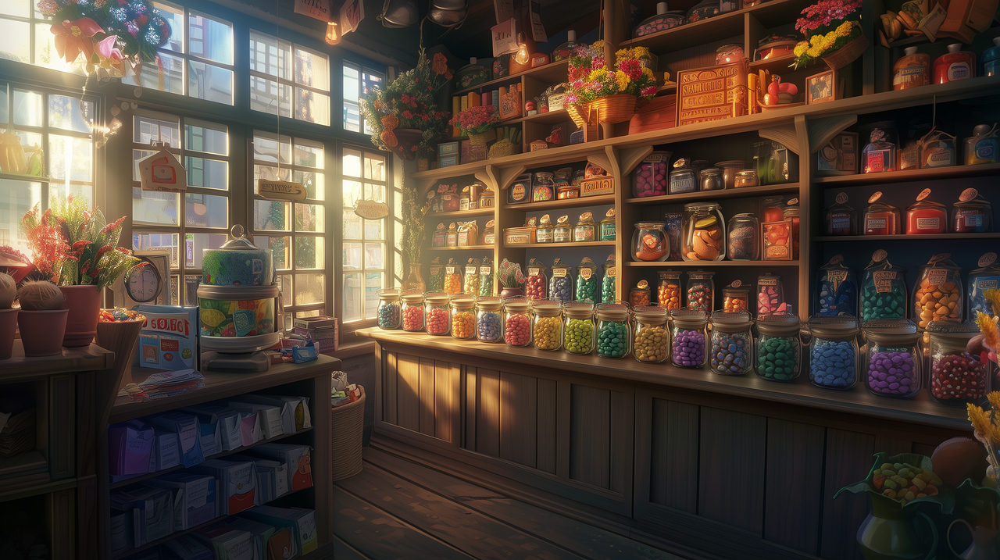

🎯 Your Mission
Connect ideas naturally
Explain problems and solutions
Describe pictures for VTEST
Speak and write at B1 level
🔗 Grammar 1 — Connectors & Discourse Markers
These words help your answers sound longer, clearer and more natural for the VTEST. Translations are included to help you choose the right connector.
First
FR: D’abord
Begin a story.
First, I welcomed the guest.
Then
FR: Puis / Ensuite
Next action.
Then, I showed them the map.
After that
FR: Après cela
Continue the sequence.
After that, I called my supervisor.
Finally
FR: Enfin / Finalement
Last step.
Finally, the guest thanked me.
Because
FR: Parce que
Give a reason.
I apologised because the attraction was closed.
So
FR: Donc / Alors
Show a result.
The guest was lost, so I helped them.
However
FR: Cependant
Show contrast.
The attraction was closed. However, another one was available nearby.
Although
FR: Bien que
Show contrast in one sentence.
Although the guest was angry, I stayed calm.
As a result
FR: Par conséquent
Explain consequence.
As a result, the guest felt reassured.
For example
FR: Par exemple
Give an example.
I help many guests every day. For example, I give directions to families.
Connector QCM
Connector Fill-in
🪄 Grammar 2 — Second Conditional
Structure
If + past simple, would + base verb
If a guest was upset, I would stay calm.
First vs Second Conditional
Real: If a guest is lost, I will help them.
Imaginary/interview: If a guest was lost, I would help them.
Second Conditional QCM
🧠 Vocabulary Academy
The connectors have now been added as a vocabulary category at the end.
📸 VTEST Photo Description Method
Use the method below to describe the real picture. This image is a theme-park style picture for practice.
1. General impression
This picture shows a busy theme park.
2. Foreground
In the foreground, I can see visitors.
3. Background
In the background, there is an attraction.
4. Actions
People are walking and enjoying the park.
5. Feelings
They seem excited and happy.
6. Opinion
I think it looks fun and lively.
Photo description builder
🎧 Listening Lab
The answers are mixed so the correct answer is not always first.
1. Angry guest
I waited for forty minutes and now the attraction is closed. Can you explain what happened?
2. Lost item
Excuse me, I think I lost my wallet near the gift shop. What should I do?
3. Restaurant allergy
My daughter has a nut allergy. Could you check if this dessert contains nuts?
🎙 Voice Memo Challenge
Use Voice Memos on iPhone/iPad. Each prompt now has a visual situation card.

Prompt 1
Describe a difficult customer situation.
A2: A customer was upset. I helped them.
B1: A customer was upset because the product was unavailable. I listened carefully and suggested another product.
B1+: A customer was upset because the product she wanted was unavailable. First, I listened carefully. Then, I checked the stock and suggested a similar product. As a result, she felt reassured.
Prompt 2
What would you do if a guest was angry?
A2: I would stay calm and help.
B1: If a guest was angry, I would listen, apologise and find a solution.
B1+: If a guest was angry, I would stay calm, acknowledge their frustration, apologise politely and offer a practical solution.
Prompt 3
Describe a photo of a busy theme park or tourist place.
A2: I can see people. They are outside.
B1: This picture shows a busy tourist place. In the foreground, people are looking at a map. They seem a little lost.
B1+: This picture shows a lively tourist area. In the foreground, visitors appear to be checking directions, while in the background there are other people walking around. The atmosphere seems busy but positive.
🏆 Final Challenge
Answer: Tell me about a problem you solved and what you learned from it.
Clear stories create confident communication. ✨